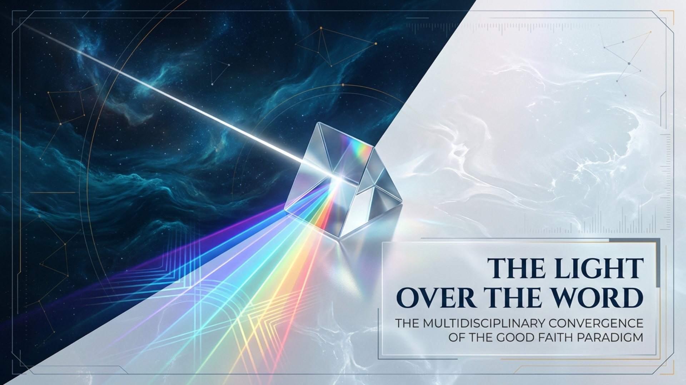

🎬 EMBEDDED FULL-HD VIDEO PLAYER (1920×1080 • 10:11.8 RUNTIME)
Voice: en-US-AvaNeural + 120 BPM Celestial Harp & Pad Bed
Prismatic Architecture: The Light Over The Word
Tip: Click any row in the Master Chapter & Timecode Table below to jump the video player directly to that slide.
🖼️ INTERACTIVE 20-SLIDE DECK CAROUSEL & STUDIO NARRATION
Slide 01: The Light Over The Word
01 / 20

TIMECODE: 00:00 – 00:21
21.3s
Key Paradigm Synthesis
🎙️ Verbatim Studio Narration
Master 20-Slide Chapter & Timecode Index
Click any slide row to load it in the interactive carousel or jump the Full-HD video player to that chapter.
| Slide | Timecode | Duration | Slide Title | Key Paradigm Synthesis | Actions |
|---|